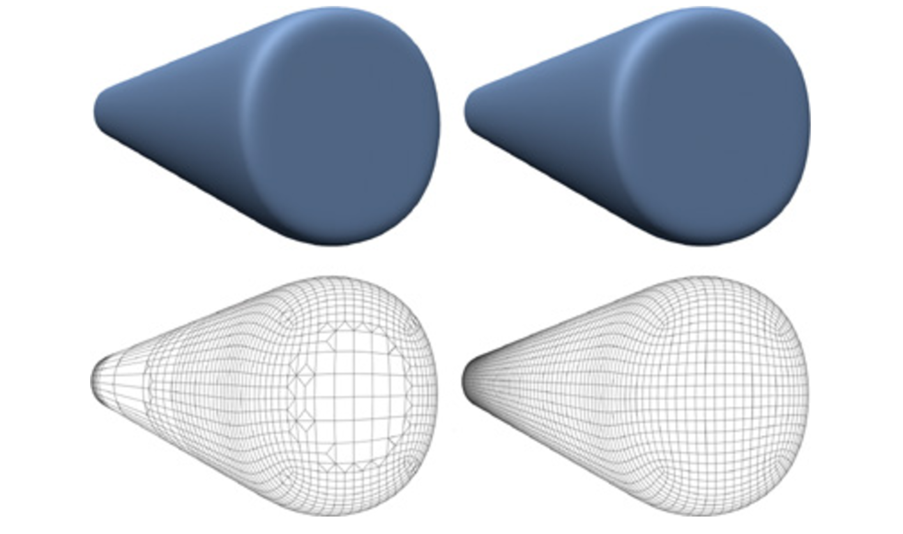
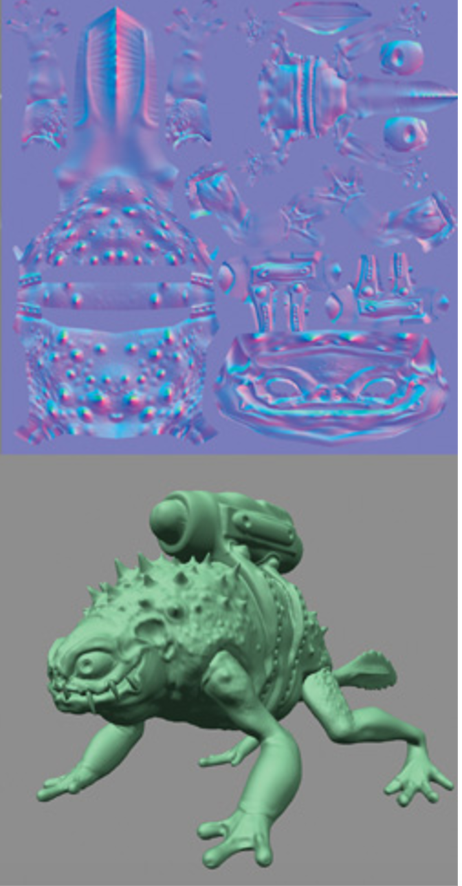

Project Title: Displacement Maps using Dynamic Tessellation
Team Members: Jeff Yu (cs184-ady), Bing Bo (cs184-afd)
Goal: implement Tessellation and Displacement Mapping in order to add stunning surface details
Problem Description
The implementation in our final project would be separated into two parts: Tessellation and Displacement Mapping.
Tessellation:
In Project 2, we have already implemented the Loop Subdivision. However, the issue arose from that is we might subdivide those meshes that do not need to be subdivided. For instance, if certain parts of surfaces have already been smooth enough, keeping subdividing the meshes beneath these parts would only be redundant and slowing our rendering. Therefore, we find the number of subdivisions that is needed for each meshes, which would be our biggest difficulty in this part.
We decide to solve it by implementing PN-Triangles to achieve Tessellation. If we followed the method in [1], we would have to change our meshes from triangle to quad and implement Catmull-Clark Subdivision. Moreover, as suggested in [2], PN-Triangles method out-performs Walton-Meek Triangles and Gregory Triangles under all situations.
Displacement Mapping:
Tessellation is implemented to achieve high performance efficiency-wise, but Displacement Mapping is the key thing that decorates our object with those "stunning surface details". Differing from a texture map, a displacement map contains a scalar value per texel that tells us how much the surface should be displaced to in the direction of its normal. In order to achieve Displacement Mapping, we need to add geometry and modify our Normal Shading by increasing the geometric details.
Goal
What we plan to deliver: Firstly, we finish tessellation in final project. In project 2, we implement fixed loop subdivision for each mesh. But some mesh that are close to the view point or their surface is curve need more times subdivision to produce a smooth surface, meanwhile, the meshes that are far away from view point and have low curvature do not need to do to many times subdivision relatively. Thus, in order to avoid under-subdivision or over-subdivision and make our algorithm more efficient, we need to accomplish tessellation and it is our first goal in final project. After reading article [1], we think we can also use flatness test in triangle meshes to implement tessellation, combining the method suggested in [2]. After finishing it, we should get two image as below, the left is subdivision effect with tessellation, and the right image is the regular subdivision without tessellation. As shown in the images, it is obvious the the curve and close surface experienced more subdivisions for the left image.
|  |
Next, we need to finish the displacement mapping that is used to add geometric complexity to a simple, lightweight model. Displacement maps really change the actual geometry of the surface, and each texel has a unique scalar value. And in the implementation, we need to compare the the maximum displacement and the flatness threshold and add more geometry if the edge's maximum displacement is greater than the flatness threshold. We implement flatness test during tessellation, thus we are able to accomplish it. What's more, we need to use normal mapping to take the displacement into account when shading the surface instead of adjusting the vertex normals like bump mapping. Below is a monster frog before and after implement displacement mapping, this is what we expect to get after implementation.
|  |
What we hope to deliver: If everything goes well, we hope to accomplish the the tessellation with a quad-based subdivision scheme, Catmull-Clark Subdivision. Thus we need to change the geometry that are based on the four sides polygons instead of triangles, and we hope to find any difference between the monster frog with different subdivision scheme after doing diaplacement mapping on it.

|
Schedule
First week, we should complete implementing tessellation.
Second week, we should finish the displacement mapping and see the monster frog with details, and the meshes is triangle.
Third week, if everything goes well, we will try to implement Catmull-Clark Subdivision. Otherwise, we will try to debug the works in previous two weeks.
Last week, we will prepare the presentation and other materials for final deliverables.
Resource
[1] http://http.developer.nvidia.com/GPUGems2/gpugems2_chapter07.html
[2] https://interactive.asu.edu/wp-content/papercite-data/pdf/amresh2012methods.pdf